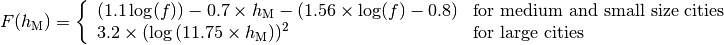
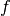
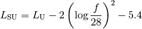

|
A Discrete-Event Network Simulator
|
Models |
|
|
A Discrete-Event Network Simulator
|
Models |
The ns-3 propagation module defines two generic interfaces, namely PropagationLossModel and PropagationDelayModel, for the modeling of respectively propagation loss and propagation delay.
Each of the available propagation loss models of ns-3 is explained in one of the following subsections.
This model is used to model open area pathloss for long distance (i.e., > 1 Km). In order to include all the possible frequencies usable by LTE we need to consider several variants of the well known Okumura Hata model. In fact, the original Okumura Hata model [hata] is designed for frequencies ranging from 150 MHz to 1500 MHz, the COST231 [cost231] extends it for the frequency range from 1500 MHz to 2000 MHz. Another important aspect is the scenarios considered by the models, in fact the all models are originally designed for urban scenario and then only the standard one and the COST231 are extended to suburban, while only the standard one has been extended to open areas. Therefore, the model cannot cover all scenarios at all frequencies. In the following we detail the models adopted.
The pathloss expression of the COST231 OH is:
where

and
 : frequency [MHz]
: eNB height above the ground [m]
: UE height above the ground [m]
: distance [km]
: is a logarithm in base 10 (this for the whole document)
This model is only for urban scenarios.
The pathloss expression of the standard OH in urban area is:
where for small or medium sized city
and for large cities
There extension for the standard OH in suburban is

where
: pathloss in urban areas
The extension for the standard OH in open area is
The literature lacks of extensions of the COST231 to open area (for suburban it seems that we can just impose C = 0); therefore we consider it a special case fo the suburban one.
This model is designed for Line-of-Sight (LoS) short range outdoor communication in the frequency range 300 MHz to 100 GHz. This model provides an upper and lower bound respectively according to the following formulas
where the breakpoint distance is given by
and the above parameters are
: wavelength [m]
: eNB height above the ground [m]
: UE height above the ground [m]
and is the value for the basic transmission loss at the break point, defined as:
The value used by the simulator is the average one for modeling the median pathloss.
This model is designed for Non-Line-of-Sight (LoS) short range outdoor communication over rooftops in the frequency range 300 MHz to 100 GHz. This model includes several scenario-dependent parameters, such as average street width, orientation, etc. It is advised to set the values of these parameters manually (using the ns-3 attribute system) according to the desired scenario.
In detail, the model is based on [walfisch] and [ikegami], where the loss is expressed as the sum of free-space loss (), the diffraction loss from rooftop to street () and the reduction due to multiple screen diffraction past rows of building (). The formula is:
The free-space loss is given by:
where:
: frequency [MHz]
) [m]
The term takes into account the width of the street and its orientation, according to the formulas
where:
: is the height of the rooftop [m]
: is the height of the mobile [m]
: is the street orientation with respect to the direct path (degrees)
The multiple screen diffraction loss depends on the BS antenna height relative to the building height and on the incidence angle. The former is selected as the higher antenna in the communication link. Regarding the latter, the “settled field distance” is used for select the proper model; its value is given by
with
Therefore, in case of (where l is the distance over which the building extend), it can be evaluated according to
![L_{msd} = L_{bsh} + k_{a} + k_{d}\log{(d/1000)} + k_{f}\log{(f)} - 9\log{(b)}
L_{bsh} = \left\{ \begin{array}{ll} -18\log{(1+\Delta h_{b})} & \mbox{for } h_{b} > h_{r} \\ 0 & \mbox{for } h_{b} \le h_{hr} \end{array}\right.
k_a = \left\{ \begin{array}{lll}
71.4 & \mbox{for } h_{b} > h_{r} \mbox{ and } f>2000 \mbox{ MHz} \\
54 & \mbox{for } h_{b} > h_{r} \mbox{ and } f\le2000 \mbox{ MHz} \\
54-0.8\Delta h_b & \mbox{for } h_{b} \le h_{r} \mbox{ and } d \ge 500 \mbox{ m} \\
54-1.6\Delta h_b & \mbox{for } h_{b} \le h_{r} \mbox{ and } d < 500 \mbox{ m} \\
\end{array} \right.
k_d = \left\{ \begin{array}{ll}
18 & \mbox{for } h_{b} > h_{r} \\
18 -15\frac{\Delta h_b}{h_r} & \mbox{for } h_{b} \le h_{r}
\end{array} \right.
k_f = \left\{ \begin{array}{ll}
-8 & \mbox{for } f>2000 \mbox{ MHz} \\
-4 + 0.7(f/925 -1) & \mbox{for medium city and suburban centres and} f\le2000 \mbox{ MHz} \\
-4 + 1.5(f/925 -1) & \mbox{for metropolitan centres and } f\le2000 \mbox{ MHz}
\end{array}\right.](_images/math/5420dda0437a8ca2428f93d26502d60e8ef581b8.png)
Alternatively, in case of , the formula is:
where
where:
This is the empirical model for the pathloss at 2600 MHz for urban areas which is described in [kun2600mhz]. The model is as follows. Let be the distance between the transmitter and the receiver in meters; the pathloss  in dB is calculated as:
in dB is calculated as:
The following propagation delay models are implemented:
| [hata] | M.Hata, “Empirical formula for propagation loss in land mobile radio services”, IEEE Trans. on Vehicular Technology, vol. 29, pp. 317-325, 1980 |
| [cost231] | “Digital Mobile Radio: COST 231 View on the Evolution Towards 3rd Generation Systems”, Commission of the European Communities, L-2920, Luxembourg, 1989 |
| [walfisch] | J.Walfisch and H.L. Bertoni, “A Theoretical model of UHF propagation in urban environments,” in IEEE Trans. Antennas Propagat., vol.36, 1988, pp.1788- 1796 |
| [ikegami] | F.Ikegami, T.Takeuchi, and S.Yoshida, “Theoretical prediction of mean field strength for Urban Mobile Radio”, in IEEE Trans. Antennas Propagat., Vol.39, No.3, 1991 |
| [kun2600mhz] | Sun Kun, Wang Ping, Li Yingze, “Path loss models for suburban scenario at 2.3GHz, 2.6GHz and 3.5GHz”, in Proc. of the 8th International Symposium on Antennas, Propagation and EM Theory (ISAPE), Kunming, China, Nov 2008. |